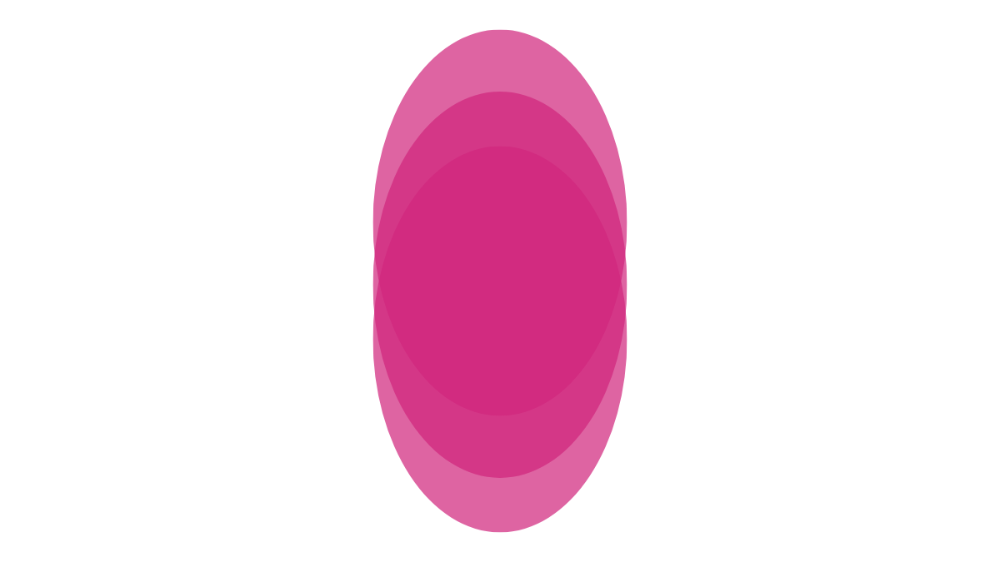

Estudante Ensino Médio Senac.
Site da Filtn, site que provem ajuda a resolver um problema encontrado nas indústrias quanto a falta de ineficiência em certos casos.
Site que traz uma solução criativa e tecnológica para certas adversidades encontradas na cidade Santa Cruz do Sul, tendo como objeto cuidar da área da saúde: para conscientizarmos as pessoas sobre o mosquito Aedes Aegypt (transmissor da dengue, da Chikungunya e da Zika) e maneiras de prevenção das doenças levadas por ele.
Atividade de criar uma programação orientada a objetos (POO) onde você pode criar um animal.
Exemplos do Portugol Webstudio - um site de tutoriais para aprendizado em programação - para JavaScript passados para um site
Estudante do Ensino Médio Senac RS.
Músico e desenvolvedor iniciante.
iagolangone07@gmail.com